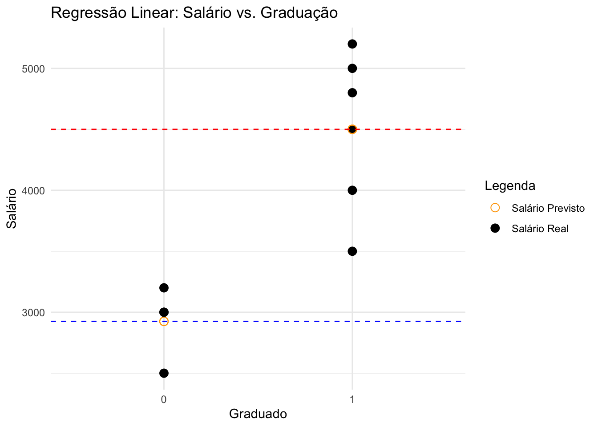
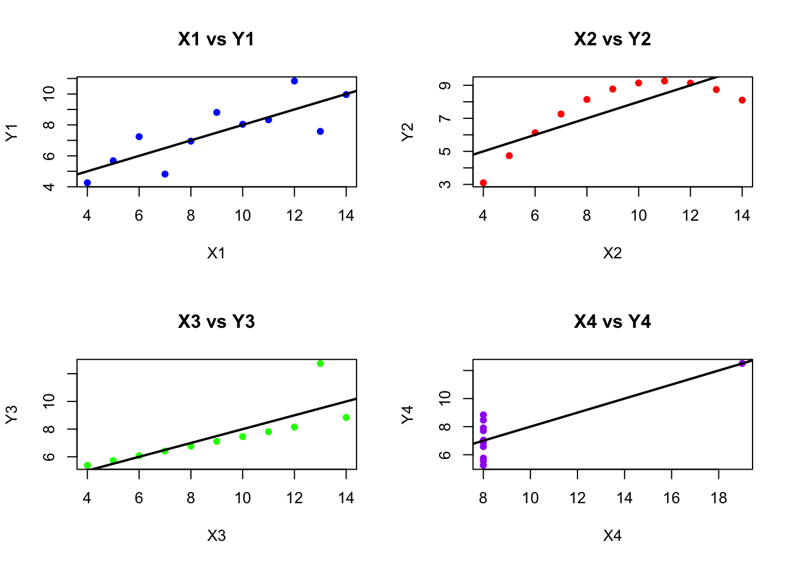

O exercício realizado em sala está dividido em três questões.
A questão 1 a ser respondida está no Capítulo 1 do livro Real Stats (p. 17 na versão impressa; p. 29 no PDF). Para responde-la, leia o capítulo 1 o qual apresenta o modelo básico de regressão e explica como experimentos aleatórios ajudam a identificar causalidade. Essa mesma discussão foi realizada em aula e está presente nos slides fornecidos pelo professor.
Na questão 2, que também está no Capítulo 1 (p. 18 na versão impressa; p. 30 no PDF), vocês devem responder aos itens transcritos integralmente do livro Real Stats nas páginas indicadas. É importante revisar o trecho sobre experimentos randomizados para entender como o controle de variáveis melhora as estimativas.
Na questão 3, localizada no Capítulo 2 (p. 41 na versão impressa; p. 63 no PDF), avaliaremos o material fornecido por Anscombe (1973). Vocês devem explorar um conjunto de dados disponível no arquivo anscombe.dta (pasta dados/). A tarefa envolve analisar quatro pares de variáveis (X1 a X4 como variáveis independentes e Y1 a Y4 como variáveis dependentes). O objetivo é entender as propriedades desses dados utilizando ferramentas básicas de estatística descritiva e visualização gráfica.
1Questão 1 - (Capítulo 1, página 17 na versão impressa / página 29 no PDF):
Economistas do trabalho frequentemente estudam os retornos da educação (ver, por exemplo, Card (1999)). Suponha que temos dados sobre os salários de um conjunto de pessoas, algumas das quais frequentaram a faculdade e outras não. Um modelo simples que relaciona educação e salário é:
Salário = β0+β1⋅Graduado na Faculdade i + ε i
(a) O que significa β0? O que significa β1?
(b) O que está no termo de erro (εi)?
(c) Quais são as condições para que a variável independente X seja endógena?
(d) A variável independente é provavelmente endógena? Por que sim ou por que não?
(e) Explique como a endogeneidade pode levar a inferências incorretas.
Respostas:
(a) O que significa β0? O que significa β1?
O termo β0 representa o intercepto do modelo de regressão, ou seja, é o salário médio estimado para indivíduos que não se graduaram na faculdade. Em outras palavras, β0 indica o valor do salário quando a variável “Graduado na Faculdade” é igual a zero.
Por outro lado, o coeficiente β1 representa a diferença no salário médio entre indivíduos que se graduaram na faculdade e aqueles que não se graduaram. Como a variável “Graduado na Faculdade” é binária (0 para não graduados e 1 para graduados), β1 quantifica a alteração no salário esperada ao passar de não graduado (0) para graduado (1).
Exemplo de calculo:
# Carregando pacotes necessárioslibrary(tidyverse)library(broom)# Configuração da notação científicaoptions(scipen =99)# Criando um data frame de exemplodata <-data.frame(salario =c(3000, 3500, 2500, 4000, 4500, 5000, 3200, 4800, 3000, 5200),graduado =c(0, 1, 0, 1, 1, 1, 0, 1, 0, 1) # 0 = Não Graduado, 1 = Graduado)# Ajustando o modelo de regressão linearmodelo <-lm(salario ~ graduado, data = data)# Resumo do modelosummary(modelo)
Call:
lm(formula = salario ~ graduado, data = data)
Residuals:
Min 1Q Median 3Q Max
-1000.0 -318.8 75.0 293.8 700.0
Coefficients:
Estimate Std. Error t value Pr(>|t|)
(Intercept) 2925.0 270.8 10.799 0.00000477 ***
graduado 1575.0 349.7 4.504 0.00199 **
---
Signif. codes: 0 '***' 0.001 '**' 0.01 '*' 0.05 '.' 0.1 ' ' 1
Residual standard error: 541.7 on 8 degrees of freedom
Multiple R-squared: 0.7172, Adjusted R-squared: 0.6819
F-statistic: 20.29 on 1 and 8 DF, p-value: 0.001991
# Exibindo os coeficientescoeficientes <-tidy(modelo)print(coeficientes)
# Previsões com o modelodata$salario_predito <-predict(modelo, newdata = data)# Visualizando os resultadosdata
Abaixo para visualizar o gráfico dessa regressão
# Criando o gráficoggplot(data, aes(x =factor(graduado), y = salario)) +geom_point(aes(color ="Salário Real"), size =3) +# Pontos reais de saláriogeom_point(aes(y = salario_predito, color ="Salário Previsto"), size =3, shape =1) +# Pontos previstosgeom_hline(yintercept =coef(modelo)[1], linetype ="dashed", color ="blue") +# Linha para não graduadosgeom_hline(yintercept =coef(modelo)[1] +coef(modelo)[2], linetype ="dashed", color ="red") +# Linha para graduadoslabs(title ="Regressão Linear: Salário vs. Graduação",x ="Graduado",y ="Salário",color ="Legenda") +scale_color_manual(values =c("Salário Real"="black", "Salário Previsto"="orange")) +theme_minimal()

Podemos calcular manualmente os valores dessa regressão
# Calculando a média de salários para não graduados (x = 0)media_nao_graduados <-mean(data$salario[data$graduado ==0])media_nao_graduados
[1] 2925
# Calculando a média de salários para graduados (x = 1)media_graduados <-mean(data$salario[data$graduado ==1])media_graduados
[1] 4500
# Calculando o coeficiente beta1beta1 <- media_graduados - media_nao_graduadosbeta1
[1] 1575
# O intercepto beta0 é a média de salários para não graduadosbeta0 <- media_nao_graduadosbeta0
[1] 2925
# Montando a fórmula da regressão# y = beta0 + beta1 * x + erro# Calculando o valor previsto para graduados (x = 1)y_graduados <- beta0 + beta1 *1y_graduados
[1] 4500
# Calculando o valor previsto para não graduados (x = 0)y_nao_graduados <- beta0 + beta1 *0y_nao_graduados
[1] 2925
# Os valores coincidem com os coeficientes estimados por lm()coef(modelo)
(Intercept) graduado
2925 1575
(b) O que está no termo de erro (εi)?
O termo εi é composto por todos os fatores que influenciam o valor do salário, mas que não foram incluídos na equação. Dentre eles, podemos citar o gênero e a raça dos trabalhadores e suas experiências prévias no mercado de trabalho.
(c) Quais são as condições para que a variável independente X seja endógena?
Graduar-se na faculdade é endógeno se um ou mais dos itens no termo de erro estão correlacionados com a graduação na faculdade. Se a variável é endógena, o modelo não fornecerá uma estimativa não viesada da relação entre graduação na faculdade e salário.
(d) A variável independente é provavelmente endógena? Por que sim ou por que não?
Graduar-se na faculdade é quase certamente endógeno, pois inteligência, dedicação, recursos familiares e muitos outros fatores afetam a graduação na faculdade e o salário.
(e) Explique como a endogeneidade pode levar a inferências incorretas.
Suponha que a inteligência esteja correlacionada com a graduação na faculdade e o salário. Pode ser que pessoas inteligentes ganhem mais, mas que a faculdade não tenha efeito sobre o salário. O modelo que apresentamos, entretanto, provavelmente indicaria uma relação incorreta entre faculdade e salário, porque aqueles que foram para a faculdade eram mais inteligentes e ganhavam mais.
2Questão 2 - Pergunta de discussão 4, apenas as partes (a) e (b), do Capítulo 1 do RS (p. 18 na versão impressa; p. 30 no PDF)
Parte(a) Explique o conceito de variáveis aleatórias e como elas influenciam as estimativas de regressão.
Parte(b) Discuta a endogeneidade e as maneiras de lidar com ela para garantir que as estimativas não sejam viesadas. Por que a endogeneidade é considerada um dos maiores obstáculos na inferência causal?
Resposta:
Parte(a) Explique o conceito de variáveis aleatórias e como elas influenciam as estimativas de regressão.
Uma variável aleatória é uma variável cujo valor resulta de um processo com componente de acaso: antes de observá-la, sabemos apenas a distribuição de valores que ela pode assumir. Na regressão, o termo de erro (\(\varepsilon_i\)) é uma variável aleatória e, por isso, a própria variável dependente também é. Como cada amostra traz uma realização diferente desses erros, os coeficientes estimados (\(\hat\beta_0\) e \(\hat\beta_1\)) também são variáveis aleatórias: mudariam de amostra para amostra. É por isso que falamos na distribuição amostral de \(\hat\beta_1\), em erro-padrão e em intervalos de confiança. A aleatoriedade, por si só, gera imprecisão (variância), mas não viés: o viés aparece quando o erro está correlacionado com a variável independente (endogeneidade).
Parte(b) Discuta a endogeneidade e as maneiras de lidar com ela para garantir que as estimativas não sejam viesadas. Por que a endogeneidade é considerada um dos maiores obstáculos na inferência causal?
A endogeneidade é um dos maiores obstáculos na inferência causal porque torna difícil determinar se a variável independente realmente causa mudanças na variável dependente, dificultando a interpretação correta dos resultados e a formulação de políticas baseadas nessas análises.
Segundo Bailey (2014), a melhor forma de combater a endogeneidade é ter variação exógena que, por sua vez, pode ser criada. O procedimento através do qual tal variação é criada se chama randomização e consiste na determinação de valores aleatórios das variáveis independentes para que esta não esteja relacionada aos fatores presentes no termo de erro que afetam o valor da variável dependente.
3Questão 3 - (Capítulo 2, página 41 na versão impressa / página 63 no PDF).
Anscombe (1973) criou quatro conjuntos de dados com propriedades interessantes. Vamos usar as ferramentas deste capítulo para descrever e entender esses conjuntos de dados. Os dados estão em um arquivo Stata chamado anscombe.dta (no livro, AnscombesQuartet.dta). Existem quatro possíveis variáveis independentes (x1 a x4) e quatro possíveis variáveis dependentes (y1 a y4). Crie um arquivo de replicação que leia os dados e implemente as análises necessárias para responder às seguintes perguntas. Inclua linhas de comentários que expliquem o código.
Parte(a): Anote brevemente a média e a variância para cada uma das quatro variáveis X. Anote também a média e a variância para cada uma das quatro variáveis Y. Com base nesses valores, você caracterizaria os quatro conjuntos de variáveis como semelhantes ou diferentes? A partir dos resultados do código abaixo avalie a média e variância das variávies:
# Carregar o pacote 'rio' para importar a base de dados# (se necessário, instale antes com install.packages("rio"))library(rio)# Importar a base de dados 'anscombe.dta'd <-import(file ="../../dados/anscombe.dta")# Forma compacta: média e variância de todas as variáveis de uma vezround(sapply(d[, c("x1", "x2", "x3", "x4", "y1", "y2", "y3", "y4")],function(v) c(media =mean(v), variancia =var(v))), 3)
# Forma longa, variável por variável# Calcular e exibir a média e a variância para X1cat("X1:\n")
X1:
cat("Média:", mean(d$x1), "\n")
Média: 9
cat("Variância:", var(d$x1), "\n\n")
Variância: 11
# Calcular e exibir a média e a variância para X2cat("X2:\n")
X2:
cat("Média:", mean(d$x2), "\n")
Média: 9
cat("Variância:", var(d$x2), "\n\n")
Variância: 11
# Calcular e exibir a média e a variância para X3cat("X3:\n")
X3:
cat("Média:", mean(d$x3), "\n")
Média: 9
cat("Variância:", var(d$x3), "\n\n")
Variância: 11
# Calcular e exibir a média e a variância para X4cat("X4:\n")
X4:
cat("Média:", mean(d$x4), "\n")
Média: 9
cat("Variância:", var(d$x4), "\n\n")
Variância: 11
# Calcular e exibir a média e a variância para Y1cat("Y1:\n")
Y1:
cat("Média:", mean(d$y1), "\n")
Média: 7.500909
cat("Variância:", var(d$y1), "\n\n")
Variância: 4.127269
# Calcular e exibir a média e a variância para Y2cat("Y2:\n")
Y2:
cat("Média:", mean(d$y2), "\n")
Média: 7.500909
cat("Variância:", var(d$y2), "\n\n")
Variância: 4.12763
# Calcular e exibir a média e a variância para Y3cat("Y3:\n")
Y3:
cat("Média:", mean(d$y3), "\n")
Média: 7.5
cat("Variância:", var(d$y3), "\n\n")
Variância: 4.12262
# Calcular e exibir a média e a variância para Y4cat("Y4:\n")
Y4:
cat("Média:", mean(d$y4), "\n")
Média: 7.500909
cat("Variância:", var(d$y4), "\n\n")
Variância: 4.123249
Resposta:
As variáveis X1, X2, X3 e X4 têm exatamente a mesma média (9) e a mesma variância (11).
As variáveis Y1 a Y4 também são praticamente idênticas nessas estatísticas: média de cerca de 7,50 e variância de cerca de 4,12 (as diferenças aparecem apenas na terceira casa decimal). Pelas estatísticas descritivas, portanto, os quatro conjuntos pareceriam iguais. Esse é justamente o ponto do quarteto de Anscombe: como os gráficos do item (b) mostram, conjuntos com as mesmas médias e variâncias (e até a mesma reta de regressão) podem ter padrões completamente diferentes. Por isso é sempre importante visualizar os dados.
Parte(b): Crie 4 gráficos de dispersão: um com X1 e Y1, outro com X2 e Y2, outro com X3 e Y3, e um último com X4 e Y4.
A partir dos resultados do código abaixo compare os resultados, principalmente avalie a adequação da linha de regressão linear para cada gráfico:
# Organizar os gráficos em uma matriz 2x2par(mfrow =c(2, 2)) # 2 linhas por 2 colunas# Gráfico de dispersão: X1 e Y1 com linha de regressãoplot(d$x1, d$y1, main ="X1 vs Y1", xlab ="X1", ylab ="Y1", pch =16, col ="blue")abline(lm(y1 ~ x1, data = d), col ="black", lwd =2) # Linha de regressão# Gráfico de dispersão: X2 e Y2 com linha de regressãoplot(d$x2, d$y2, main ="X2 vs Y2", xlab ="X2", ylab ="Y2", pch =16, col ="red")abline(lm(y2 ~ x2, data = d), col ="black", lwd =2) # Linha de regressão# Gráfico de dispersão: X3 e Y3 com linha de regressãoplot(d$x3, d$y3, main ="X3 vs Y3", xlab ="X3", ylab ="Y3", pch =16, col ="green")abline(lm(y3 ~ x3, data = d), col ="black", lwd =2) # Linha de regressão# Gráfico de dispersão: X4 e Y4 com linha de regressãoplot(d$x4, d$y4, main ="X4 vs Y4", xlab ="X4", ylab ="Y4", pch =16, col ="purple")abline(lm(y4 ~ x4, data = d), col ="black", lwd =2) # Linha de regressão

Resposta:
Parte (b) A partir dos resultados do código abaixo compare os resultados, principalmente avalie a adequação da linha de regressão linear para cada gráfico:
A regressão linear é mais adequada para o conjunto 1, onde os pontos de dados possuem resíduos mais ou menos aleatórios em torno da linha de tendência. O conjunto 2 não tem um desenho linear e, portanto, precisaria ser analisado por um modelo mais complexo do que o que estamos propondo. Já os conjuntos 3 e 4 possuem um outlier cada um. No grupo 3 há um ponto que tem seu resíduo ou sua distância da linha de tendência muito maior do que o dos outros pontos de dados, enviesando o coeficiente positivamente e tornando-o maior do que ele deveria ser caso essa observação fosse excluída. Já o grupo 4 tem um caso tão extremo de variação no eixo X que a linha de tendência se aproxima dele, mas deixa de explicar a variação de todas as outras observações.